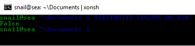
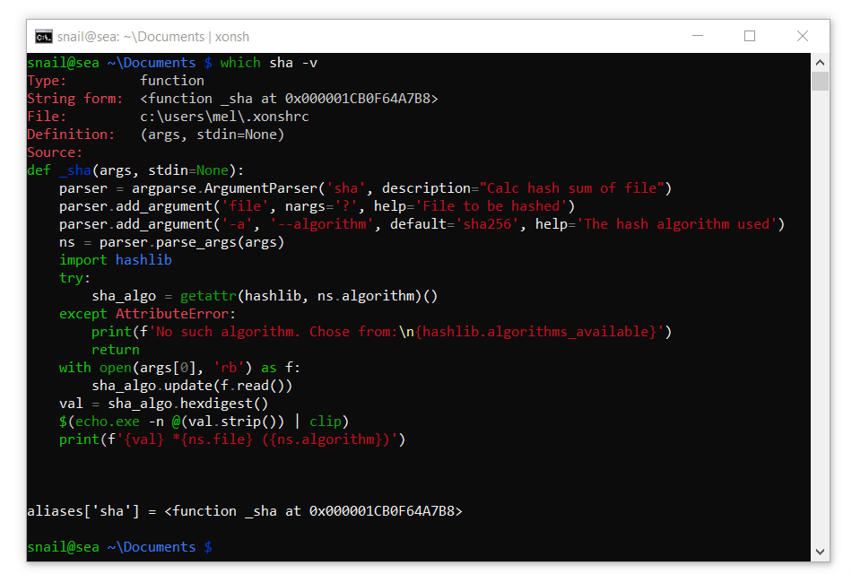

Windowsガイド¶
インストール¶
簡単な方法¶
Windowsにxonshをインストールする最も簡単な方法は、Anaconda Python Distributionとcondaパッケージマネージャーを使用する方法です。
注意
Xonshは従来のPython（2.7）ではサポートされていません。
次のコマンドでxonshをインストールします。
> conda config --add channels conda-forge
> conda install xonsh
これにより、xonshとすべての推奨される依存関係がインストールされます。次に、xonshを実行します。
> xonsh
snail@home ~ $
ソースからインストール¶
Windowsのソースからxonshをインストールするには、まずPython v3.4 +をhttp://python.orgから インストールします。インストール時に「PythonをPATHに追加」を選択することを忘れないでください。
次に、prompt_toolkitの依存関係をインストールしますpip。
> pip install prompt-toolkit
githubから最新のxonsh-master.zipをダウンロードし、解凍してくださいxonsh-master。
今すぐxonshをインストールしてください：
> cd xonsh-master
> python setup.py install
次に、xonshを実行します。
> xonsh
snail@home ~ $
使い方¶
カラースタイル¶
暗い赤と青の色は、Windowsのデフォルト端末では完全に読み取れません。
{kind=link}
色を設定する方法はありますが（下記参照）、新しいユーザーに最高の体験を与えるためにXonshには色を修正するためのいくつかのテクニックがあります。これは、デフォルト
で$ INTENSIFY_COLORS_ON_WIN環境変数によって制御さ
Trueれます。
Windows 10の場合
Windows 10は端末で真の色をサポートしているので、Win 10でXonshは端末の色の代わりにハードコードされた色のスタイルを使用します。
{kind=link}
古いWindowsの場合
古いウィンドウのインストールでは、Xonshは別のアプローチをとり、判読不能な暗い色の一部を読みやすい代替物（たとえば、青はシアンに置き換えられます）に置き換えます。
端末の色を設定する
読み取り可能なデフォルトの色でWindowsコンソールを構成することは可能ですが、手動で行うのは面倒です。マイクロソフトのコンソールチームは、端末の色を設定する便利なツールを作った
より良い色を$INTENSIFY_COLORS_ON_WIN設定するFalseには、コンソールが色を制御できるように設定する必要が
あります。これを行うには、xonsh実行制御ファイルに次の行を追加します.xonshrc。
$INTENSIFY_COLORS_ON_WIN = False
作業ディレクトリのロックを避ける¶
Python（Windows上の他のプロセスと同様）は、現在の作業ディレクトリをロックして、削除や名前変更ができないようにします。cmd.exeこの動作も同様ですが、シェルにとっては非常に面倒です。
free_cwd xonshためxontribは（アドオン）は、この問題の一部を解決します。これは、シェルがアイドルであるときはいつでも、現在の作業ディレクトリをルートドライブフォルダにリセットするプロンプトをフックすることによって動作します。プロンプトツールキットのバックエンドでのみ動作します。その動作を有効にするには、以下を実行します。
この行を~/.xonshrcファイルに追加して、常に有効にします。
>>> xontrib load free_cwd
名前空間の競合¶
Pythonのdir組み込み関数とあいまいさがあるため、cmd.exe組み込み関数を介して現在のディレクトリをリストするには.、明示的にを要求する必要があります。
>>> dir .
Volume in drive C is Windows
Volume Serial Number is 30E8-8B86
Directory of C:\Users\snail\xonsh
2015-05-12 03:04 <DIR> .
2015-05-12 03:04 <DIR> ..
2015-05-01 01:31 <DIR> xonsh
0 File(s) 0 bytes
3 Dir(s) 11,008,000,000 bytes free
多くの人dがdirコマンドのエイリアスを作成して入力を省略し、あいまいさを完全に避けます。
>>> aliases['d'] = ['cmd', '/c', 'dir']
エイリアスを追加~/.xonshrcして、xonshが起動したときにエイリアスを常に使用できるようにすることができます。
WindowsのUnicodeサポート¶
Pythonのutf-8 unicodeはWindowsのデフォルトのシェル 'cmd.exe'と互換性がありません。このパッケージはwin_unicode_consoleこれを修正します。Xonsh win_unicode_consoleがインストールされている場合はXonshが使用します。これは$ WIN_UNICODE_CONSOLE環境変数で無効/有効にすることができます。
注意
Unicodeサポートが有効になっていても、利用可能なシンボルはcmd.exeで使用されるフォントによって異なります。
パッケージwin_unicode_consoleは、パッケージ名を使用するxonsh[win]か、pipまたはcondaを使用してxonshとともにインストールできます。
> pip install win_unicode_console
> conda install --channel xonsh win_unicode_console